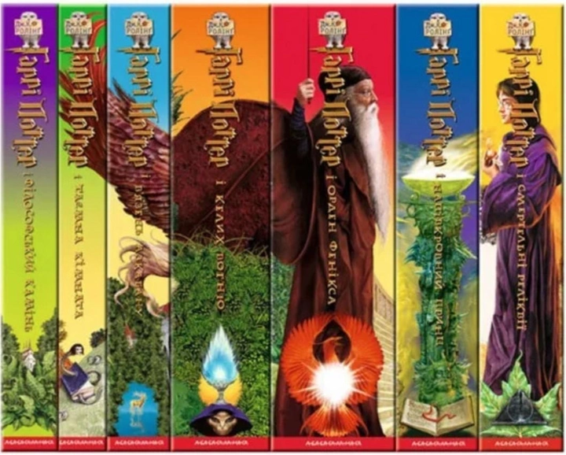

«Гаррі Поттер» (англ. Harry Potter) — серія з семи фантастичних романів англійської
письменниці Джоан Роулінг. У книгах розповідається про пригоди юного чарівника
Гаррі Поттера і його друзів Герміону Ґрейнджер і Рона Візлі, які навчаються у
Гоґвортській школі чарів і чаклунства. Основний сюжет присвячений боротьбі Гаррі
проти темного чаклуна лорда Волдеморта, який намірюється стати безсмертним, повалити
чаклунський керівний орган званий Міністерством магії і підкорити всіх чарівників і маґлів
(не чарівників).
Основна серя складається з 7 книг.
Також є ниги у всесвіті роману, але не стосуються головних герїв.
Книги, які першими потрапляють до рук тих, хто пізнав всесвіт Гаррі Поттера – це «Фантастичні звірі
і де їх шукати», а також «Квідич крізь віки». Обидві книги були створені Джоан Роулінг паралельно
з написанням основної історії, але не як Гаррі Поттер – продовження, а скоріше в якості доповнення
і роз’яснення
Реальні книги стали прототипами вигаданих підручників, які так подобалися головному герою роману.
«Фантастичні звірі і де їх шукати» – є реально виданою версією одного з найулюбленіших шкільних
підручників Гаррі Поттера із дисципліни Догляд за магічними істотами. «Квідич крізь віки» – це
своєрідна інструкція про те, що являє собою вигадана гра квідич, а також детальний опис того, яким
його придумала авторка – Джоан Роулінг.
Фанати Гаррі Поттера добре пам’ятають наскільки сильно любив читати цю книгу їхній улюблений герой.
